DUCKS
| Photo |
Name |
Number |
Position |
Shot |
Height |
Weight |
Birthday |
Hometown |
| 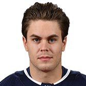 |
Pontus Aberg |
20 |
LW |
R |
5' 11" |
196 |
Sep 23, 1993 |
Stockholm, SWE |
| 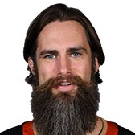 |
Patrick Eaves |
18 |
RW |
R |
5' 11" |
203 |
May 1, 1984 |
Calgary, AB, CAN |
|
Ryan Getzlaf |
15 |
C |
R |
6' 4" |
225 |
May 10, 1985 |
Regina, SK, CAN |
|
Brian Gibbons |
23 |
C |
L |
5' 8" |
175 |
Feb 26, 1988 |
Braintree, MA, USA |
| 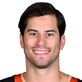 |
Adam Henrique |
14 |
C |
L |
6' 0" |
197 |
Feb 6, 1990 |
Brantford, ON, CAN |
| 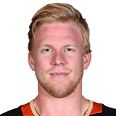 |
Ondrej Kase |
25 |
RW |
R |
5' 11" |
186 |
Nov 8, 1995 |
Kadan, CZE |
|
Ryan Kesler |
17 |
C |
R |
6' 2" |
206 |
Aug 31, 1984 |
Livonia, MI, USA |
|
Corey Perry |
10 |
RW |
R |
6' 3" |
206 |
May 16, 1985 |
Peterborough, ON, CAN |
|
Rickard Rakell |
67 |
C |
R |
6' 1" |
202 |
May 5, 1993 |
Sundbyberg, SWE |
|
Nick Ritchie |
37 |
LW |
L |
6' 2" |
234 |
Dec 5, 1995 |
Orangeville, ON, CAN |
|
Carter Rowney |
24 |
RW |
R |
6' 2" |
206 |
May 10, 1989 |
Grand Prairie, AB, CAN |
|
Kiefer Sherwood |
64 |
RW |
R |
6' 0" |
194 |
Mar 31, 1995 |
Columbus, OH, USA |
| 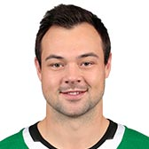 |
Devin Shore |
29 |
C |
L |
6' 1" |
205 |
Jul 19, 1994 |
Ajax, ON, CAN |
| 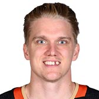 |
Jakob Silfverberg |
33 |
RW |
R |
6' 1" |
204 |
Oct 13, 1990 |
Gävle, SWE |
|
Daniel Sprong |
11 |
RW |
R |
6' 0" |
180 |
Mar 17, 1997 |
Amsterdam, NLD |
| Photo |
Name |
Number |
Shot |
Height |
Weight |
Birthday |
Hometown |
| 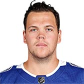 |
Jake Dotchin |
21 |
R |
6' 3" |
210 |
Mar 24, 1994 |
Cambridge, ON, CAN |
|
Cam Fowler |
4 |
L |
6' 2" |
206 |
Dec 5, 1991 |
Windsor, ON, CAN |
| 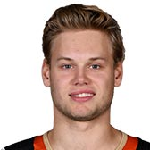 |
Jacob Larsson |
32 |
L |
6' 2" |
197 |
Apr 29, 1997 |
Ljungby, SWE |
| 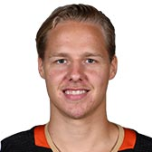 |
Hampus Lindholm |
47 |
L |
6' 3" |
211 |
Jan 20, 1994 |
Helsingborg, SWE |
| 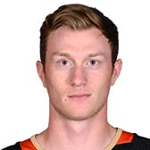 |
Josh Manson |
42 |
R |
6' 3" |
216 |
Oct 7, 1991 |
Hinsdale, IL, USA |
|
Brandon Montour |
26 |
R |
6' 0" |
193 |
Apr 11, 1994 |
Brantford, ON, CAN |
| 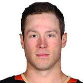 |
Andy Welinski |
45 |
R |
6' 1" |
201 |
Apr 27, 1993 |
Duluth, MN, USA |
| Photo |
Name |
Number |
Height |
Weight |
Birthday |
Hometown |
|
John Gibson |
36 |
6' 2" |
206 |
Jul 14, 1993 |
Pittsburgh, PA, USA |
| 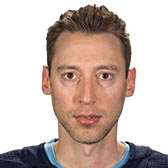 |
Chad Johnson |
1 |
6' 3" |
197 |
Jun 10, 1986 |
Saskatoon, SK, CAN |
|
Ryan Miller |
30 |
6' 2" |
168 |
Jul 17, 1980 |
East Lansing, MI, USA |